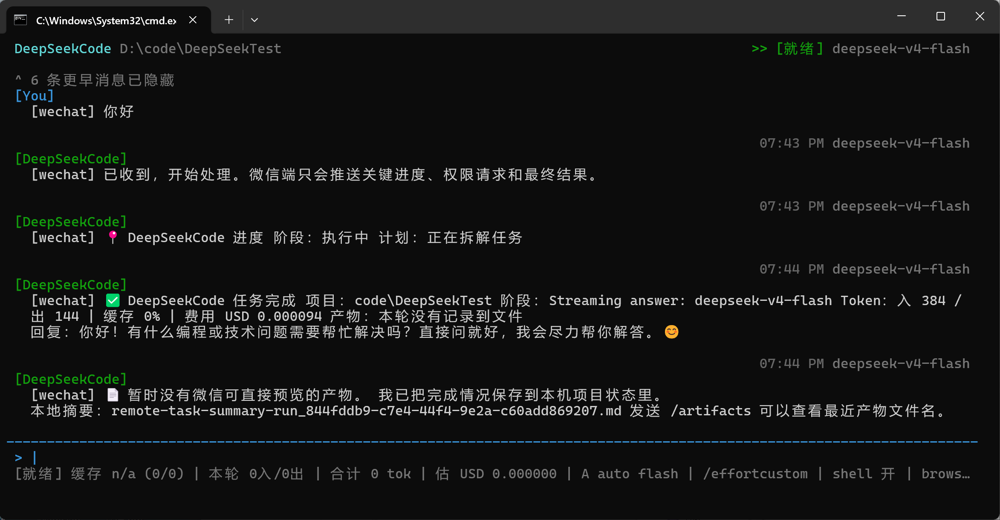
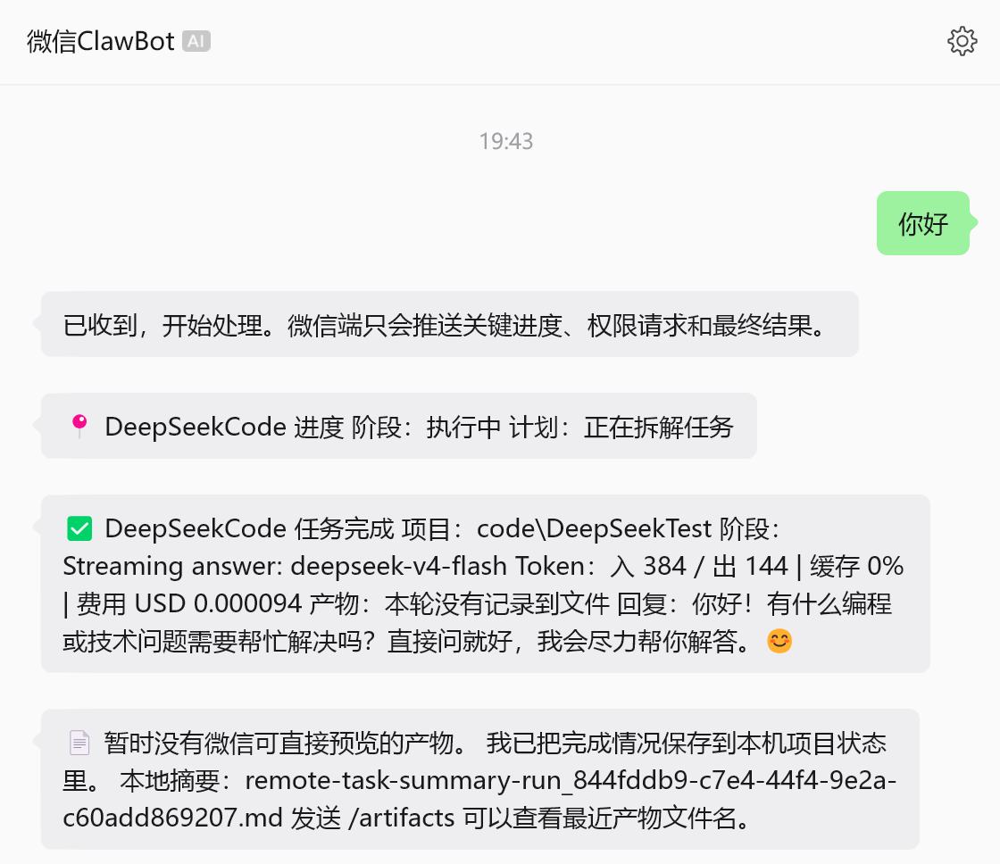
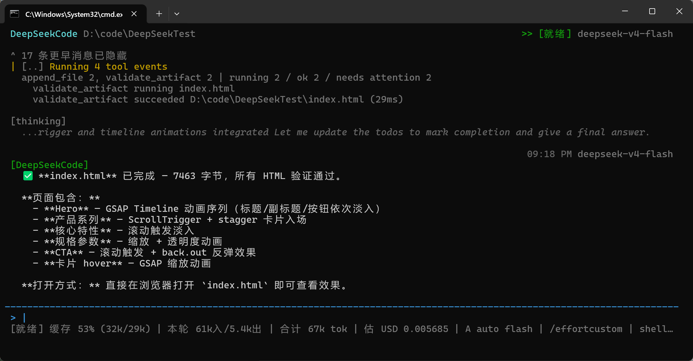

Native tools
模型通过 DeepSeek tools 数组请求本地工具，runtime 负责 Zod 校验、权限、执行、tool_result 回放和失败反馈。
DeepSeekCode 用 native tool calls 连接本地文件、shell/browser、权限审批、任务契约、通用验收、skills、MCP、微信远程和多 Agent 协作。它面向真实项目执行，而不只是生成建议文本。
$ deepseekcode --model deepseek-v4-flash
✓ native DeepSeek tool schema loaded
contract TaskCompletionContract generated
> 用多 agent 完成一个前后端任务，并自己验收
planner dynamic roles + role-local checkpoints
runtime verify_task selects validators from real artifacts
repair failed command result replayed to model
agent-trace.jsonl
run_state
tool_result_summary
remote_delivery_plan进入任意项目目录运行 deepseekcode。会话、runs、events、artifacts、approvals、memory 和远程绑定会保存在该目录的 .deepseekcode 中，便于继续任务和恢复上下文。
npm install -g @xh12312/deepseekcode
cd /d D:\code\DeepSeekTest
deepseekcode --model deepseek-v4-flash模型负责理解目标和选择工具；runtime 负责权限、安全、平台诊断、产物识别、通用验收和失败回放。网页只是其中一种验证器，同一套 verify_task 也覆盖代码、脚本、真实 PDF、Office、数据、报告、插件、MCP 和自动化任务。
这些截图来自本机测试：TUI 同步微信消息、个人微信远程任务结果、GSAP skill 自动参与网页动画任务。



模型通过 DeepSeek tools 数组请求本地工具，runtime 负责 Zod 校验、权限、执行、tool_result 回放和失败反馈。
verify_task 根据任务契约和真实产物选择验证器，覆盖代码、脚本、文档、数据、媒体、插件、MCP 和自动化输出。
run_command 会识别常见 PowerShell 不兼容命令和 node-gyp/native dependency 失败，并给模型可执行的修复方向。
支持本地、GitHub、Git URL 和 file:// skill/plugin 安装。模型可通过 search_skills 与 invoke_skill 自动调用。
多 Agent workflow 先生成可确认计划；Planner 和 AcceptanceReviewer 固定，中间执行角色按任务动态生成，并用 Pixel cockpit 展示任务黑板、角色分工、进程、缓存、阻塞和证据。
远程回传按真实文件类型决定：图片预览、PDF/Office 文件、摘要、入口、manifest 和启动命令，不刷屏发送源码。
推荐在桌面 TUI 里通过 /remote-control 绑定个人微信或企业微信。远程消息进入同一个 QueryEngine、同一套权限 gate 和同一份项目状态。
/remote-control wechat start
/status full
/ask 现在任务卡在哪里
/artifacts